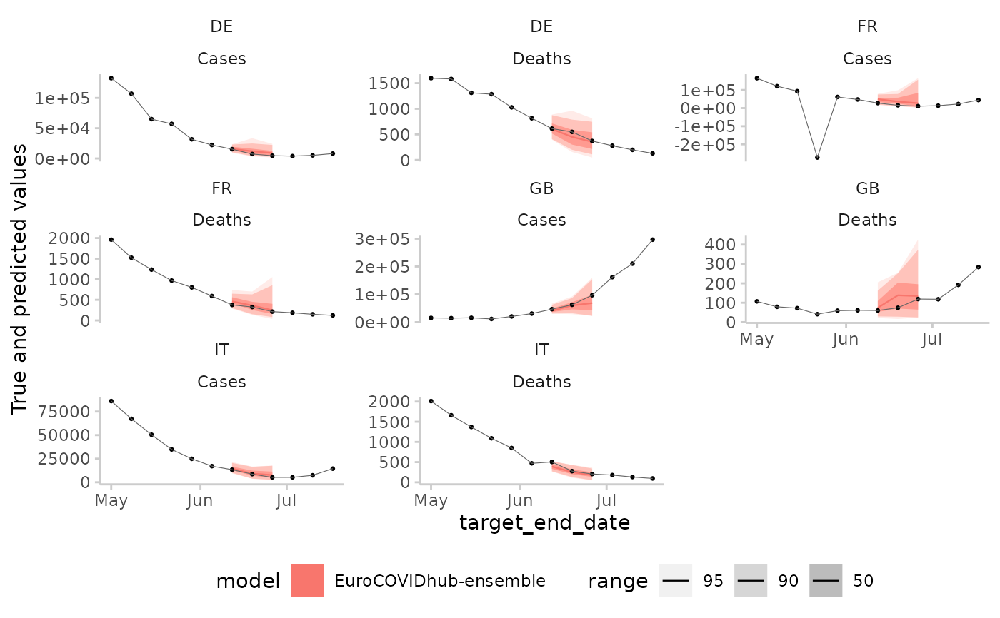
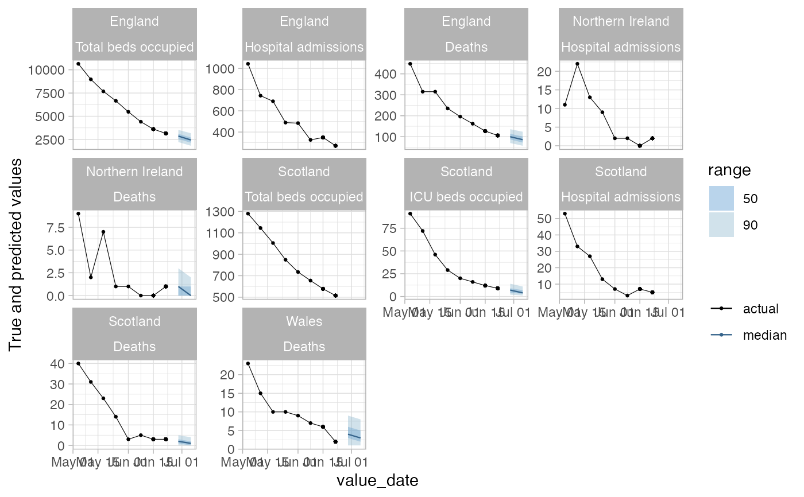

Make a plot of observed and predicted values
plot_predictions(
data = NULL,
forecasts = NULL,
truth_data = NULL,
merge_by = NULL,
x = "date",
filter_truth = list(),
filter_forecasts = list(),
filter_both = list(),
range = c(0, 50, 90),
facet_formula = NULL,
facet_wrap_or_grid = "facet_wrap",
ncol = NULL,
scales = "free_y",
allow_truth_without_pred = FALSE,
remove_from_truth = c("model", "forecaster", "quantile", "prediction", "sample",
"interval"),
xlab = x,
ylab = "True and predicted values",
verbose = TRUE
)| data | a data.frame that follows the same specifications outlined in
|
|---|---|
| forecasts | data.frame with forecasts, that should follow the same general guidelines as the `data` input. Argument can be used to supply forecasts and truth data independently. Default is `NULL`. |
| truth_data | data.frame with a column called `true_value` on the x-axis. Usually, this will be "date", but it can be anything else. |
| merge_by | character vector with column names that `forecasts` and `truth_data` should be merged on. Default is `NULL` and merge will be attempted automatically. |
| x | character vector of length one that denotes the name of the variable |
| filter_truth | a list with character strings that are used to filter the truth data. Every element is parsed as an expression and evaluated in order to filter the truth data. |
| filter_forecasts | a list with character strings that are used to filter the truth data. Every element is parsed as an expression and evaluated in order to filter the forecasts data. |
| filter_both | same as `filter_truth` and `filter_forecasts`, but applied to both data sets for convenience. |
| range | numeric vector indicating the interval ranges to plot. If 0 is included in range, the median prediction will be shown. |
| facet_formula | formula for facetting in ggplot. If this is |
| facet_wrap_or_grid | Use ggplot2's |
| ncol | Number of columns for facet wrap. Only relevant if
|
| scales | scales argument that gets passed down to ggplot. Only necessary if you make use of facetting. Default is "free_y" |
| allow_truth_without_pred | logical, whether or not to allow instances where there is truth data, but no forecast. If `FALSE` (the default), these get filtered out. |
| remove_from_truth | character vector of columns to remove from the truth data. The reason these columns are removed is that sometimes different models or forecasters don't cover the same periods. Removing these columns from the truth data makes sure that nevertheless all available truth data is plotted (instead of having different true values depending on the period covered by a certain model). |
| xlab | Label for the x-axis. Default is the variable name on the x-axis |
| ylab | Label for the y-axis. Default is "True and predicted values" |
| verbose | print out additional helpful messages (default is TRUE) |
ggplot object with a plot of true vs predicted values
example1 <- scoringutils::continuous_example_data
example2 <- scoringutils::range_example_data_long
scoringutils::plot_predictions(example1, x = "value_date",
filter_truth = list('value_date <= "2020-06-22"',
'value_date > "2020-05-01"'),
filter_forecasts = list("model == 'SIRCOVID'",
'creation_date == "2020-06-22"'),
facet_formula = geography ~ value_desc)

scoringutils::plot_predictions(example2, x = "value_date",
filter_truth = list('value_date <= "2020-06-22"',
'value_date > "2020-05-01"'),
filter_forecasts = list("model == 'SIRCOVID'",
'creation_date == "2020-06-22"'),
allow_truth_without_pred = TRUE,
facet_formula = geography ~ value_desc)
